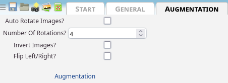

General outline
asanAI offers a simple way of creating sequential neural networks and train them on your own data, from within the browser. It allows you to visualize a lot of different intermediate steps. You can, when done training, also
export the trained model to Python and NodeJS.
Quickstart
GUI Basics

The bar at the top is called ribbon. It contains general options, applicable to all layers, the data itself or the ability to start the training.

The left side is the layers panel. It shows the layers of the current neural network in the state they are in currently. Also, it shows the description of what groups of layers do on the right side.
Train on images from webcam
The quickest and easiest way to create a neural network is to simply use images from the webcam.
Click on the camera icon 📸 in the top-left of the ribbon.

You then get a screen where you can set how many images you want to take via webcam (default: 100) and how much time should between them in seconds (default: 0.9 seconds). If you want to take multiple pictures, set these settings accordingly and click "Take 100 images from webcam (0.9 seconds apart)" on the first category.
If you just want to use a single image, press "Take image from webcam" instead.
While doing these images, please move the object around, so that the neural network can see it from different angles and sides.
Each of these buttons is assigned to a category, which you can name. By default, there are 2 categories, but you can add as many as you like. If you want to remove a category, press "Delete this category". If you want to add a category, press "Add new category".

When you have as many categories and images as you wish, go to the ribbon and click

.
Remember that the image will, by default, be converted to 10x10 pixels, so make sure that the objects you hold in front of the camera are well-visible and clearly distinguishable.
You will then see graphs like these:

For now only the topmost graph is important. The two lines are the
Loss and
Validation-Loss.
Both show how well the network is performing. A simple (but technically inaccurate) way of thinking of them is the number of errors the network makes while predicting. The lower, the better.
The Validation Loss is based on the
Validation Split. This takes a certain percentage out of the training loop and tests the network after each
Epoch on data the network has not yet seen.
Both graphs should look similiar. Check
how to interpret these graphs here. If the two lines differ wildly, consider this:
Reasons why training graphs can differ.
When the training is done (or you prematurely cancelled it, which can be done by clicking

in the ribbon), you get automatically redirected to the Predict tab, where your webcam is already enabled and the prediction of what the network thinks is shown life.

The category which has the highest probability is automatically highlighted in green.
Congratulations! 🎉 You have now trained a neural network. You can now
export it to python and do any kinds of logic with it.
Train on images from files
TODO
Train on CSV
TODO
Basic idea of neural networks
Data
For neural networks, everything is a tensor. Even if you don't know, you have certainly used tensors. Every number, every vector and matrix is a tensor.
Tensors are a generalization of matrices. Where matrices have 2 dimensions,
$$
\textrm{Second dimension}
\stackrel{\mbox{First dimension}}{%
\begin{pmatrix}
a_{11} & a_{12} & \cdots & a_{1M} \\
a_{21} & a_{22} & \cdots & a_{2M} \\
\vdots & \vdots & \ddots & \vdots \\
a_{N1} & a_{N2} & \cdots & a_{NM}
\end{pmatrix}%
}.
$$
Tensors have an arbitrary number of dimensions.
An image, for example, consists of 3 channels, one for red, green and blue, each one being a matrix (or submatrix of the image tensor). If the image is 2x2 pixels, the image as a tensor would look like this:
$$
\text{Image} = \begin{pmatrix}
\text{Red:} \begin{pmatrix}
221 & 122 \\
121 & 11
\end{pmatrix},
\text{Green:} \begin{pmatrix}
0 & 12 \\
1 & 2
\end{pmatrix},
\text{Blue:} \begin{pmatrix}
225 & 255 \\
240 & 211
\end{pmatrix}
\end{pmatrix}
$$
This is a full description of this picture:
Any data a computer can handle can be expressed as
some tensor. They may have more or larger dimensions, but they are nonetheless tensors.
The description of the size of a tensor is called a shape. A two-by-two-Matrix would have the shape \( [2, 2] \). The image above would have the shape \( [2, 2, 3] \), because its 2x2 pixels and has three channels. An image with 64x64 pixel and 3 channels would be \( [64, 64, 3] \).
One-Hot-Encoding
One-Hot-Encoding is used to symbolize percentages of values of categories. For example, if you want to differentiate between cat and dog, the output vector
could be \( [\text{Percentage Cat}, \text{Percentage Dog}] \), which, in total, sums up to 1 (100%).
For more categories, you'd add another entry to that column vector, like \( [\text{Percentage Cat}, \text{Percentage Dog}, \text{Percentage Human} ] \), all of which, again, sum up to 1. This can be achieved with the
SoftMax-activation-function.
Layers
Layers act as nested functions. Each layer is a function by itself, and with layers, you put them together into one larger function.
You can imagine them as such:
$$ \text{Result} = \text{Layer 3}\left(\text{Layer 2}\left(\text{Layer 1}\left(\text{Layer 0}\left(\text{input data}\right)\right)\right)\right) $$
This is called a sequential model, since the data flows through it sequentially. There are other types of models, but they cannot be designed with asanAI.
What do functions have to do with neural networks?
A mathematical function assigns values from one set to values from another. For example, the function \( \text{nth\_prime}(n) \) assigns natural numbers \( (1, 2, 3, \dots) \) to a subset of natural numbers, prime numbers, \( (2, 3, 5, \dots) \).
Since parameters for functions can also be matrices, or even tensors, you can define a computer program as a function that gets some input and produces a specific output, depending solely on the inputs.
Imagine a set of images of cats and dogs. These are, as already discussed, tensors. If you want to classify these images, you are actually searching a function such that
$$
f\left(\text{Input Image Tensor}\right) = \begin{pmatrix}
\text{Probability cat in percent}\\
\text{Probability dog in percent}
\end{pmatrix}
$$
Writing this function manually is practically impossible. Every picture of every cat or dog is different. Even if it's the same cat, it is different if the picture is taken half a second later. So you cannot simply say "if this pixel has this color and this pixel has this color, and ..., then it is a cat".
This is where Neural Networks jump in. Via the layers, we can approximate a function that does that, by connecting different very generalized functions (called layer types) that do specific kinds of tasks.
We will cover these layers
here.
In neural networks, instead of writing the interna of functions by yourself, you give the network a lot of data and what should come out. Mathematically, you tell the network that the function \( f \) should transform the input set \( X \) to the output set \( Y \). It will try to find values for the parameters of the interna of the functions, whose general outline you need to give by specifying the layer types and their options, so that the difference between the values you specify as ground truth and the values the network gives out is minimized as much as possible.
Dimensionality Reduction
A common goal of neural networks is dimensionality reduction.
Imagine a 64x64 image of either a cat or a dog. The image has 3 channels, so in total it consists of \( 64*64*3 = 12288 \) values. If we only have the categories "Dog" or "Cat", we need to reduce the information from 12288 values to only 2 values.
This is a dimensionality reduction, from a tensor of the shape \( [64, 64, 3] \) to a tensor of the shape \( [2] \).
This can be done by several ways. For example,
convolutions or
pooling layers "extract" information from images and reduce the number of values and therefore reduce the dimensionality of the inputted images.
Training
The
loss function creates a single value from the training data \(X\) and \(Y\) such that the lower the number is, the better the results are.
This creates a so-called "loss-landscape", that is a function that represents, for each data point, how well the network currently recognizes it.
For each point, this is just a single float. The overall loss is the average loss of all points.
For each point, while training, a loss is determined. How exactly this is done is dependent on the optimizer chosen (see
Optimizers for more details).
After each
Batch, the (trainable) weights and biases are adjusted to to better fit the training data and to minimize the loss. The network structure is not altered while training.
Batch-Size
While training, you (most probably) cannot hold all the data at once in memory. So the data is splitted into so-called batches. A batch is a subset of the \( X \)-input-tensor and the \( Y \)-output-tensor, such that the inputs are still correctly assigned. Imagine you have 1000 input values that correspond to 1000 output values, and having batch-size 3, then the first batch may be:
$$
f\left(
\begin{pmatrix}
x_0 \\
x_1 \\
x_2
\end{pmatrix}
\right) = \begin{pmatrix}
y_0 \\
y_1 \\
y_2
\end{pmatrix}
$$
The next batch may then be:
$$
f\left(
\begin{pmatrix}
x_3 \\
x_4 \\
x_4
\end{pmatrix}
\right) = \begin{pmatrix}
y_3 \\
y_4 \\
y_5
\end{pmatrix}
$$
and so on, until all values have been seen by the network once. This is then called an
epoch.
Epochs
When the network, while training, has seen all training data once, this is called an epoch. You usually need many epochs after each other to train a neural network.
Shuffling
Because usually not the whole data fits into memory and has to be sharded into smaller chunks (
Batches), it is usually recommended to shuffle the data. Imagine you didn't do this in the example network that should learn to classify cats and dogs, and in the first batch the network there are only cats and in the second one only dogs.
Then, the network would learn "cat" in the first batch and be punished for what it has learnt previously in the next batch, where there are only dogs.
It's recommended that in each batch, if possible, there are data from many different categories, so the network doesn't
overfit in each batch.
Predicting
TODO
Shapes
Input Shape
TODO
Output Shape
TODO
Overfitting
TODO
A very simple neural network
TODO
Layer Types
TODO
Basic Layer Types
Dense
Available options:
Trainable,
Use Bias,
Units,
Activation Functions,
Kernel Initializer,
Bias Initializer,
Kernel Regularizer,
Bias Regularizer,
Visualize Layer
Dense Layers are used as a general-purpose-function-approximator. The basic mathematical structure of a Dense Layer is as follows:
$$
\text{Dense:} \qquad \underbrace{\begin{pmatrix}
y_{0}
\end{pmatrix}}_{\mathrm{Output}}
= \underbrace{\begin{pmatrix}
x_{0}
\end{pmatrix}}_{\mathrm{Input}}
\times \underbrace{\begin{pmatrix}
-1.4404407739639282
\end{pmatrix}}_{\mathrm{Kernel^{1 \times 1}}}
+ \underbrace{\begin{pmatrix}
0
\end{pmatrix}}_{\mathrm{Bias}}
$$
Depending on the
Input Shape, the number of elements in both the Kernel and the Bias may change.
This, for example, is a Dense Layer with the input shape \( [2] \):
$$
\text{Dense:} \qquad \underbrace{\begin{pmatrix}
y_{0}
\end{pmatrix}}_{\mathrm{Output}}
= \underbrace{\begin{pmatrix}
x_{0}\\
x_{1}
\end{pmatrix}}_{\mathrm{Input}}
\times \underbrace{\begin{pmatrix}
0.785955011844635\\
-0.015428715385496616
\end{pmatrix}}_{\mathrm{Kernel^{2 \times 1}}}
+ \underbrace{\begin{pmatrix}
0.123153419419419
\end{pmatrix}}_{\mathrm{Bias}}
$$
Flatten
Flatten has no options. It creates a simple vector of any matrix.
Example:
$$
\textrm{Flatten}\left( \begin{pmatrix}
0 & 1 & 2 \\
3 & 4 & 5 \\
6 & 7 & 8
\end{pmatrix}\right) = \left[0 \quad 1 \quad 2 \quad 3 \quad 4 \quad 5 \quad 6 \quad 7 \quad 8 \right]
$$
This is used for
Dimensionality Reduction, in asanAI especially for the transfer of image tensors to vectors for Dense Layers (see
Network Structures).
Dropout
Available options:
Dropout-Rate
The dropout layer sets random values to 0 which a probability given in the Dropout-Rate-option.
$$
\underbrace{\textrm{Dropout}}_{\text{Dropout-Rate: 50\%}}\left(
\begin{pmatrix}
1 & 2 & 3 & 4 \\
5 & 6 & 7 & 8 \\
9 & 10 & 11 & 12 \\
13 & 14 & 15 & 16 \\
17 & 18 & 19 & 20 \\
21 & 22 & 23 & 24 \\
\end{pmatrix}
\right)
\xrightarrow{\text{Set values randomly to 0 with a 50\% chance}}
\begin{pmatrix}
0 & 0 & 3 & 0 \\
5 & 6 & 7 & 8 \\
9 & 10 & 0 & 0 \\
0 & 0 & 15 & 0 \\
0 & 18 & 19 & 20 \\
21 & 0 & 0 & 0 \\
\end{pmatrix}
$$
This is only active while training.
This is used for avoiding
overfitting.
Reshape
Available Options:
Target Size.
This allows incoming data tensors to be reshaped into another tensor. The number of elements does not change, only their arragement.
TODO
Activation Layer Types
See
Activation Functions. The Activation Layer Types just do the same as the activation functions, but in a seperate layer.
Convolutional Layers
convNd (conv1d, conv2d)
Convolutions slide a matrix, called kernel or filter, with width \(x\) and height \(y\) over the data (by
strides steps, and, for each submatrix of the size \(x\) by \(y\), multiplying each submatrix with a so-called kernel or filter of a certain size. This
reduces dimensionality and preserves the general activation strength at certain submatrices.
Example:
Kernel: \( K = \begin{pmatrix}
1 & -1 \\
0 & 2
\end{pmatrix}\).
Data: \( D = \begin{pmatrix}
10 & 8 & 1 & 4 \\
4 & 2 & 14 & 5 \\
12 & 20 & 5 & 19 \\
32 & 128 & 3 & 30
\end{pmatrix}
\).
The first submatrix (without
Padding, because it is not needed here for the Kernel fits perfectly when
strides = 1) is \( S_1 = \begin{pmatrix}
10 & 8 \\
4 & 2
\end{pmatrix} \). \( S_1 \cdot K = \begin{pmatrix}
10 & 8 \\
4 & 2
\end{pmatrix} \cdot \begin{pmatrix}
1 & -1 \\
0 & 2
\end{pmatrix} = \begin{pmatrix}
10 & 6 \\
4 & 0
\end{pmatrix}
\).
The second submatrix is then \( S_2 = \begin{pmatrix}
1 & 4 \\
14 & 5
\end{pmatrix} \), which, multiplied by \(K\), is \( \begin{pmatrix}
1 & 7 \\
14 & -4
\end{pmatrix}
\).
When slided over the whole image, the result is \(
\begin{pmatrix}
10 & 6 & 1 & 7 \\
4 & 0 & 14 & -4 \\
12 & 28 & -5 & 43 \\
32 & 224 & 3 & 57
\end{pmatrix}
\). The kernel is being trained to recognize whatever it needs to recognize.
What the kernel has learnt can be seen by
Visualize Layer for images and image-like tensors.
The same principle of a sliding window with matrix multiplications is used in all Convolutional Layers, no matter if 1d or 2d. For 2d, the input tensor must have the shape \( [\text{int}, \text{int}, \text{int}] \) (disregarding the batch size, which would be at first position).
A bias is (if enabled) then added to each output value of this graph.
For 1d convolutions, the kernel can be written as 2d-matrix. For 2d convolutions, the kernel is actually a 3d-cube.
conv2dTranspose
TODO
depthwiseConv2d
TODO
depthwiseConv2d
TODO
seperableConv2d
TODO
upsampling2d
Makes images and image-like tensors larger by duplicating lines specified by the size factors \( [w, h] \).
For example, \(
\underbrace{\text{upsampling2d}}_{w = 2,\ h = 4}\left(
\begin{pmatrix}
1 & 2 \\
3 & 4
\end{pmatrix}
\right) = \begin{pmatrix}
1 & 1 & 2 & 2 \\
1 & 1 & 2 & 2 \\
1 & 1 & 2 & 2 \\
1 & 1 & 2 & 2 \\
3 & 3 & 4 & 4 \\
3 & 3 & 4 & 4 \\
3 & 3 & 4 & 4 \\
3 & 3 & 4 & 4
\end{pmatrix} \)
This can be used to upscale images after they have been compressed. E.g. for image segmentation.
Pooling layers
averagePooling (averagePooling1d, averagePooling2d)
averagePooling slides a window with pool size \(x\) and \(y\) as width/height over the data (by
strides steps, and, for each submatrix of the size \(x\) by \(y\), calculating the average of all the elements in that submatrix. This
reduces dimensionality and preserves the general activation strength at certain submatrices.
Example:
$$
\underbrace{\text{averagePooling}}_{\text{Strides: 1x1, Pool-Size: 2x2}} \left(\begin{pmatrix}
\color{red}{10} & \color{red}{8} & \color{blue}{1} & \color{blue}{4} \\
\color{red}{4} & \color{red}{2} & \color{blue}{14} & \color{blue}{5} \\
\color{orange}{12} & \color{orange}{20} & \color{green}{-5} & \color{green}{19} \\
\color{orange}{32} & \color{orange}{128} & \color{green}{3} & \color{green}{30}
\end{pmatrix}\right) = \begin{pmatrix}
\color{red}{\frac{10 + 8 + 4 + 2}{4}} & \color{blue}{\frac{1 + 4 + 14 + 5}{4}} \\
\color{orange}{\frac{12+20+32+128}{4}} & \color{green}{\frac{-5+19+3+30}{4}} \\
\end{pmatrix} = \begin{pmatrix}
\color{red}{6} & \color{blue}{6} \\
\color{orange}{48} & \color{green}{11.75} \\
\end{pmatrix}
$$
maxPooling (maxPooling1d, maxPooling2d)
maxPooling slides a window with pool size \(x\) and \(y\) as width/height over the data (by
strides steps, and, for each submatrix of the size \(x\) by \(y\), extracts the largest number. This
reduces dimensionality and preserves the most activated values in certain regions.
Example:
$$
\underbrace{\text{maxPooling}}_{\text{Strides: 1x1, Pool-Size: 2x2}} \left(\begin{pmatrix}
\color{red}{10} & \color{red}{8} & \color{blue}{1} & \color{blue}{4} \\
\color{red}{4} & \color{red}{2} & \color{blue}{14} & \color{blue}{5} \\
\color{orange}{12} & \color{orange}{20} & \color{green}{-5} & \color{green}{19} \\
\color{orange}{32} & \color{orange}{128} & \color{green}{3} & \color{green}{30}
\end{pmatrix}\right) = \begin{pmatrix}
\color{red}{10} & \color{blue}{14} \\
\color{orange}{128} & \color{green}{30} \\
\end{pmatrix}
$$
Dropout and noise layers
alphaDropout

\( \rightarrow \)

(In this example, 0.2).
TODO
gaussianDropout

\( \rightarrow \)

Drops out with a gaussian distribution of a specified dropout rate (in the example, 0.2).
This is used for simulating real-world-data, which is usually noisy (for example, when coming in over a webcam).
This layer is only active during training.
gaussianNoise

\( \rightarrow \)

Adds gaussian noise to images. You can specify the standard deviation (in the case shown above = 1) of how noisy the image should be.
This is used for simulating real-world-data, which is usually noisy (for example, when coming in over a webcam).
This layer is only active during training.
Debug Layers
Debug Layer
This layer does not do anything to the data. It just prints them out to
console.log.
Layer Options
Trainable
If enabled, the network's weights and biases (if enabled, see
Use Bias) are changed while training. If not, they stay the same.
Use Bias
If enabled, the network has a bias. In Dense Networks, a layer with Use Bias enabled, has this mathematical representation:
$$
\underbrace{\begin{pmatrix}
y_{0}
\end{pmatrix}}_{\mathrm{Output}}
= \mathrm{\underbrace{LeakyReLU}_{\mathrm{Activation}}}\left(\underbrace{\begin{pmatrix}
x_{0}\\
x_{1}
\end{pmatrix}}_{\mathrm{Input}}
\times \underbrace{\begin{pmatrix}
-1.124836802482605\\
0.01841479167342186
\end{pmatrix}}_{\mathrm{Kernel^{2 \times 1}}}
+ \underbrace{\begin{pmatrix}
0.123153419419419
\end{pmatrix}}_{\mathrm{Bias}}
\right)
$$
A Layer without Use Bias enabled would look like this:
$$
\underbrace{\begin{pmatrix}
y_{0}
\end{pmatrix}}_{\mathrm{Output}}
= \mathrm{\underbrace{LeakyReLU}_{\mathrm{Activation}}}\left(\underbrace{\begin{pmatrix}
x_{0}\\
x_{1}
\end{pmatrix}}_{\mathrm{Input}}
\times \underbrace{\begin{pmatrix}
0.24012170732021332\\
1.188180685043335
\end{pmatrix}}_{\mathrm{Kernel^{2 \times 1}}}
\right)
$$
The bias allows the function's output to be shifted in any axis.
Units
TODO
Standard-Deviation
TODO
Strides
TODO
Regularizer
l1
TODO
l2
TODO
l1l2
TODO
Initializers
TODO
glorotUniform
TODO
constant
TODO
glorotNormal
TODO
heNormal
TODO
heUniform
TODO
leCunNormal
TODO
leCunUniform
TODO
ones
Initializes the weight or bias with \( 1 \). For example, imagine kernel initializer
ones and bias initializer randomUniform, a possible layer function could be:
$$
\left(\underbrace{\begin{pmatrix}
x_{0}\\
x_{1}
\end{pmatrix}}_{\mathrm{Input}}
\times \underbrace{\begin{pmatrix}
1 & 1 & 1 & 1 & 1 & 1 & 1 & 1\\
1 & 1 & 1 & 1 & 1 & 1 & 1 & 1
\end{pmatrix}}_{\mathrm{Kernel^{2 \times 8}}}
+ \underbrace{\begin{pmatrix}
0.7754069566726685 \\
0.49466845393180847 \\
0.7826976180076599 \\
0.25087693333625793 \\
0.794059157371521 \\
0.5701638460159302 \\
0.04553954675793648 \\
0.20112565159797668
\end{pmatrix}}_{\mathrm{Bias}}
\right)
$$
randomNormal
TODO
randomUniform
TODO
truncatedNormal
TODO
varianceScaling
TODO
zeros
Initializes the weight or bias with \( 0 \). For example, imagine kernel initializer
ones and bias initializer randomUniform, a possible layer function could be:
$$
\left(\underbrace{\begin{pmatrix}
x_{0}\\
x_{1}
\end{pmatrix}}_{\mathrm{Input}}
\times \underbrace{\begin{pmatrix}
0 & 0 & 0 & 0 & 0 & 0 & 0 & 0\\
0 & 0 & 0 & 0 & 0 & 0 & 0 & 0
\end{pmatrix}}_{\mathrm{Kernel^{2 \times 8}}}
+ \underbrace{\begin{pmatrix}
0.7754069566726685 \\
0.49466845393180847 \\
0.7826976180076599 \\
0.25087693333625793 \\
0.794059157371521 \\
0.5701638460159302 \\
0.04553954675793648 \\
0.20112565159797668
\end{pmatrix}}_{\mathrm{Bias}}
\right)
$$
Kernel Initializer
TODO
Bias Initializer
TODO
Kernel Regularizer
TODO
Bias Regularizer
TODO
Dropout Shape
TODO
Target Shape
TODO
Initializer Functions
TODO
Regularizer Functions
TODO
Validation Split
Validation Loss
Loss
TODO
General variables used here:
$$ \text{Output value of the network} := y_i $$
$$ \text{Ground truth output value} := \hat{y}_i $$
$$ \text{Ground truth input value} := \hat{x}_i $$
$$ \text{Number of elements in total} := n $$
meanSquaredError
This loss is used when you want to minimize a neural network, where the difference between 2 possible output values has a meaningful interpretation. That means, if you care about the exact number coming out of the network, instead of just using it as a category id for example.
$$ \mathrm{MSE} = \frac{1}{n} \sum_{i=1}^n \left(y_i - \hat{y}_i\right)^2 $$
binaryCrossentropy
$$ \text{Binary Crossentropy:} -\frac{1}{n} \sum_{i=1}^n y_i \cdot \log\left(\hat{y}_i\right) + 1\left(-y_i\right) \cdot \log\left(1 - \hat{y}_i\right) $$
categoricalCrossentropy
$$ \text{Categorical Crossentropy:} -\sum_{i=1}^n y_i \log\left(\hat{y}_i\right) $$
Imagine you want to classify images as one of 5 categories. The input tensors are the images themselves, the output tensor is a vector by the shape of \( [5] \).
Each entry in that output vector is a percentage of how much the network thinks the predicted image is of that one category. For example, imagine the output tensor is \(
\begin{pmatrix}
0.03 \\
0.9 \\
0.05 \\
0.01 \\
0.01
\end{pmatrix}
\). This means the network is 3% certain the image belongs to category 1, 90% for category 2, 5% for category 3 and 1% for category 4 and 5 respectively.
Imagine the was really category 2. Then, the network already does a prettys good job, even though the results are not perfectly at 1, they are close enough to be meaningful.
We don't want to punish the network for that then, of course.
But imagine, category 3 was the correct one. Then, it was very bad, although it is the second best category.
For this, categoricalCrossentropy is useful. Let us calculate the categorical crossentropy value for each of those options.
In the first one, the ground-truth output is \(
\begin{pmatrix}
0 \\
1 \\
0 \\
0 \\
0 \\
\end{pmatrix}
\). The categorical crossentropy would be:
$$ -\sum_{i=1}^n y_i \log\left(\hat{y}_i\right) = $$
$$
-\left(
\underbrace{(0 * \log(0.03))}_\text{First entry} +
\underbrace{(1 * \log(0.9))}_\text{Second entry} +
\underbrace{(0 * \log(0.05))}_\text{Third entry} +
\underbrace{(0 * \log(0.01))}_\text{Fourth entry} +
\underbrace{(0 * \log(0.01))}_\text{Fifth entry}
\right) =
$$
$$
-\left(
0 + -0.10536051565782630123 + 0 + 0 + 0
\right) = 0.10536051565782630123
$$
This is not a perfect loss, but it indicates the results is quite OK.
Let's try the other case, where the ground truth is \(
\begin{pmatrix}
0 \\
0 \\
1 \\
0 \\
0 \\
\end{pmatrix}
\). The categorical crossentropy would be:
$$
-\left(
\underbrace{(0 * \log(0.03))}_\text{First entry} +
\underbrace{(0 * \log(0.9))}_\text{Second entry} +
\underbrace{(1 * \log(0.05))}_\text{Third entry} +
\underbrace{(0 * \log(0.01))}_\text{Fourth entry} +
\underbrace{(0 * \log(0.01))}_\text{Fifth entry}
\right) =
$$
$$
-\left(
0 + 0 + -2.99573227355399099344 + 0 + 0
\right) = 2.99573227355399099344
$$
Which is quite a high loss.
categoricalCrossentropy rewards losses that are
close enough to be useful with a low loss result, and punishes values that are far off by the desired results.
This is due to the structure of the \( \log \) function, which starts steeply and gets more and more flat the higher the number gets:
categoricalHinge
TODO
hinge
TODO
meanAbsoluteError
$$ \mathrm{MAE} = \frac{1}{n} \sum_{i=1}^n \left|y_i - \hat{y}_i\right| $$
The meanAbsoluteError calculcates the absolute difference for each set of values from the ground truth and the predicted value, and
averages over them.
If the ground truth is \( \begin{pmatrix}
0 \\
10 \\
-100
\end{pmatrix} \) and the predicted value is \( \begin{pmatrix}
3 \\
9 \\
10
\end{pmatrix} \).
The single absolute differences are \( \left[3, 1, 110\right] \), and the mean is \( \frac{3+1+110}{3} = 38 \).
This function should be used if you care about the output tensor's value to be as close to the ground truth as possible and if the difference between 2 values has a meaningful interpretation.
meanAbsolutePercentageError
TODO
$$ \text{MAPE} = \frac{1}{n} \sum_{t=1}^{n} \left|\frac{\hat{y} - y}{\hat{y}}\right| $$
meanSquaredLogarithmicError
TODO
$$ \text{Mean Squared Logarithmic Error:} \frac{1}{n} \sum_{i=0}^n \left(log\left(y_i + 1\right)- \log\left(\hat{y}_i + 1\right)\right)^2 $$
poisson
TODO
$$ \text{Poisson:} \frac{1}{n} \sum_{i=0}^n \left(\hat{x}_i - y_i\cdot \log\left(\hat{y}_i\right)\right) $$
sparseCategoricalCrossentropy
TODO
squaredHinge
TODO
$$ \text{Squared Hinge:} \sum_{i=0}^n \left(\mathrm{max}\left(0, 1 - y_i \cdot \hat{y}_i\right)^ 2\right) $$
kullbackLeiblerDivergence
TODO
logcosh
TODO
$$ \text{logcosh:} \sum_{i=0}^n \log(\cosh\left(\hat{y}_i - y_i\right)) $$
Metric
TODO
binaryAccuracy
TODO
categoricalAccuracy
TODO
precision
TODO
categoricalCrossentropy
TODO
sparseCategoricalCrossentropy
TODO
meanSquaredError
TODO
meanAbsolutePercentageError
TODO
cosine
TODO
Activation Functions
Activation functions are often used to »squeeze« the values between a certain range, mostly between 0 and 1, so that the neural-network-function is nonlinear and as such can approximate nonlinear functions.
Linear
The linear Activation function is the most simple one. It simply returns the exact same values that are inputted, without any changes.
Sigmoid
The Sigmoid function squeezes all values between 0 and 1, so that large values are near 1 and small values are near 0.
$$
\mathrm{sigmoid}\left(x\right) = \sigma\left(x\right) = \frac{1}{1+e^{-x}}\qquad (\text{Lower-limit: } 0, \text{Upper-limit: } 1)
$$
WHEN TO USE TODO
ELU
TODO
$$
\mathrm{elu}\left(x\right) = \left\{
\begin{array}{ll}
x & x \geq 0 \\
\alpha\left(e^x - 1\right)& \, x \lt 0 \\
\end{array}
\right.
$$
WHEN TO USE TODO
relu6
TODO
$$
\mathrm{relu6}\left(x\right) = \mathrm{min}\left(\mathrm{max}\left(0, x\right),6\right)\qquad (\text{Lower-limit: } 0, \text{Upper-limit: } 6)
$$
WHEN TO USE TODO
SeLu
TODO
$$
\mathrm{selu}\left(x\right) = \mathrm{scale} \cdot \mathrm{elu}\left(x, \alpha\right) = \mathrm{scale} \cdot \left\{
\begin{array}{ll}
x & x \geq 0 \\
\alpha\left(e^x - 1\right)& \, x \lt 0 \\
\end{array}
\right.
$$
WHEN TO USE TODO
SoftPlus
TODO
$$
\mathrm{softplus}\left(x\right) = \ln\left(1 + e^x\right)
$$
WHEN TO USE TODO
SoftSign
TODO
$$ \mathrm{softsign}\left(x\right) = \frac{x}{\left(1 + \left| x \right| \right)}\qquad (\text{Lower-limit: } -1, \text{Upper-limit: } 1) $$
WHEN TO USE TODO
SoftMax
$$ \mathrm{softmax}\left(x\right) = \frac{e^{z_j}}{\sum^K_{k=1} e^{z_k}}\qquad (\text{Lower-limit: } 0, \text{Upper-limit: } 1) $$
SoftMax divides each individual item by the whole sum of all items, giving you a percentage of how much each individual value is in percentage in relation to the whole.
SoftMax can be used if you want a percentage of how certain the network is in it's prediction. This is especially useful for the last layer in a classification network.
tanh
TODO
$$ \mathrm{tanh}\left(x\right) = \frac{e^x-e^{-x}}{e^x+e^{-x}}\qquad (\text{Lower-limit: } -1, \text{Upper-limit: } 1) $$
WHEN TO USE TODO
LeakyReLu
TODO
$$ \mathrm{LeakyReLU}\left(x\right) = \mathrm{max}\left(\alpha \cdot x, x\right) $$
WHEN TO USE
Optimizers
adam
TODO
adadelta
TODO
adagrad
TODO
adamax
TODO
rmsprop
TODO
sgd
TODO
Augmentation
Augmentation means: creating new training data from current training data to make training better without collecting more data manually.
Augmentation is currently only available for images.
If you have a network that looks like images (i.e., input shape is like \( [\text{int}, \text{int}, 3] \), and you have chosen
Expert Mode, you can easily add augment your data by ticking the augment checkbox in the Home menu.

Then, a new tab, "Augmentation", appears. There, you can chose types of automatic augmentation.

For example images, we have chosen this as a default image to show you the effects of each augmentation types:

These are the four types of augmentation:
Auto rotate images?


If chosen, the image will be rotated
Number of rotations? times. I.e., a full rotation (360°) is splitted into
Number of rotations? steps.
This is useful if you want to detect objects from all kinds of angles.
Invert images?

This can be used to force the network train to learn a shape instead of, for example, just colors.
If chosen, and
Auto rotate images is also chosen, each rotated image will also be inverted.

Flip left/right

Mirrors the image, so that the left side becomes the right one and vice versa.
Sine-Ripple?

Ripples the image, as if it was a reflection on a pool of water which is rippled. This can be used to simulate hand-drawn or inexact images.
Visualizations
TODO
Visualize Layer
TODO
Math Mode
TODO
User Modes
TODO
Beginner-mode
TODO
Expert-mode
TODO
Backend
CPU
TODO
GPU
The GPU is faster when you have large GPU memory and a large enough batch size.
If the batch size is too small, it may even be slower than CPU.
Create your own neural network
From CSV
TODO
From Images
TODO
From arbitrary tensors
TODO
Interpretating the training graph
TODO
Network Structures
TODO
Export
Export to Python
TODO
Export to NodeJS
TODO
Export to HTML
TODO
Tips for creating neural networks
Start small at first and add until it works.
Reasons why training graphs can differ
TODO
What to do when asanAI crashes your tab?
Please send an error report to your browser provider. This may happen when you allocate larger quantities of memory than is available.
You can always check the number of used memory by tensors by looking at the bottom right corner.
There, you can see something like this:

. It shows you the current usage of your GPU memory and RAM and how many tensors are actually allocated.
Contact
Please contact norman.koch@tu-dresden.de if you have any questions.